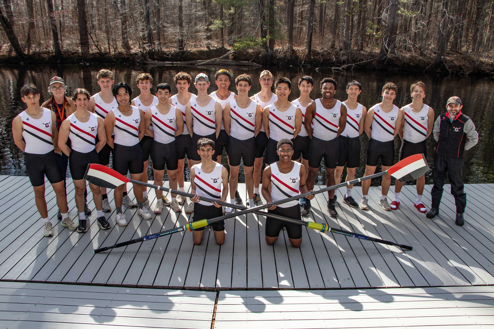

Groton_Crew_Richins_042525_162754_0853.jpg
![Close up of four boys rowers]([{%22url%22:%22https://resources.finalsite.net/images/f_auto,q_auto,t_image_size_1/v1752765595/grotonorg/hgmjrqw4z9jjtt1bv2dl/Groton_Crew_Richins_042525_162754_0853.jpg%22,%22width%22:256},{%22url%22:%22https://resources.finalsite.net/images/f_auto,q_auto,t_image_size_2/v1752765595/grotonorg/hgmjrqw4z9jjtt1bv2dl/Groton_Crew_Richins_042525_162754_0853.jpg%22,%22width%22:512},{%22url%22:%22https://resources.finalsite.net/images/f_auto,q_auto,t_image_size_3/v1752765595/grotonorg/hgmjrqw4z9jjtt1bv2dl/Groton_Crew_Richins_042525_162754_0853.jpg%22,%22width%22:800},{%22url%22:%22https://resources.finalsite.net/images/f_auto,q_auto,t_image_size_4/v1752765595/grotonorg/hgmjrqw4z9jjtt1bv2dl/Groton_Crew_Richins_042525_162754_0853.jpg%22,%22width%22:1200},{%22url%22:%22https://resources.finalsite.net/images/f_auto,q_auto,t_image_size_5/v1752765595/grotonorg/hgmjrqw4z9jjtt1bv2dl/Groton_Crew_Richins_042525_162754_0853.jpg%22,%22width%22:1600},{%22url%22:%22https://resources.finalsite.net/images/f_auto,q_auto,t_image_size_6/v1752765595/grotonorg/hgmjrqw4z9jjtt1bv2dl/Groton_Crew_Richins_042525_162754_0853.jpg%22,%22width%22:2200}])
Boys Crew - Varsity
Overview
Welcome to Groton Crew as we begin our 141st year of rowing. Since the school’s founding, rowing has been one of the school’s most popular and successful sports. It is a sport that promotes camaraderie, tenacity, competitiveness, and teamwork – important qualities in sport and in life.
Rowing at Groton is a spring sport that begins with preseason practice in mid-March and ends with the NEIRA Championships on Lake Quinsigamond in Worcester at the end of May. Groton competes in the New England Interscholastic Rowing Association (NEIRA) along with over twenty-five other schools, among them Middlesex, St. Marks, Belmont Hill, Brooks, BB&N, Noble and Greenough, Deerfield, Choate, and Pomfret—all in 4 man shells with coxswain.
This year’s team will be led by captains CJ Armaly and Ryder Cavanaugh, talented and competitive oarsmen who have shown a remarkable degree of commitment to the sport.
Throughout the winter many of the boys work on strength and conditioning, using weights and the ergometers while others play varsity hockey, basketball, or swimming. In late March, the 2024 season will begin with afternoon practices.
Andy Anderson
Varsity Boys Coach
Want to watch a race at Groton, but not sure how to get there? Click here for directions to the Boathouse.
Frequently Asked Questions
1. Who are the coaches?
Groton Crew is lucky to have a very strong coaching staff, individuals with long and successful School careers in collegiate, national, and international competitive rowing. Feel free to contact any of the coaches throughout the year.
Andy Anderson, aka Doctor Rowing, has coached rowing at Groton since 1980. He started his love affair with the sport at Mount Hermon School, where he coxed a championship 8. At Trinity College, he continued to be part of winning crews. At Groton, he has coached the boys and girls; after coaching the girls for 23 years, in 2016 he returned to coaching the boys varsity boats. In the years he coached the girls, they won the Henley Women’s Regatta three times and were National and New England champions. He coached the US Lightweight Women’s National team for eleven years and helped them win three gold, one silver, and two bronze medals at the World Rowing Championships. Since 1994, he has written a column, Ask Doctor Rowing that is a popular staple of Rowing, the world's largest rowing publication. He has a best-selling book, The Compleat Dr. Rowing. Andy teaches Spanish, is Associate Head of School, and is Director of Rowing at Groton.
Michael O'Donnell: Michael was the varsity coxswain at Noble and Greenough School, where he coxed a NEIRA champion boat in 1998, before going on to cox at Dartmouth. He has coached at Miami Rowing Club, St. Mark's School, and Fessenden School before coming to Groton in the fall of 2012. He is the Dean of Students and teaches Latin and US History.
Michael Gnozzio: Michael rowed at Groton and was happy to return to the Nashua River in 2018 as a coach. He works with the youngest boys on the JV, helping them to learn the rowing stroke and how to compete. He is a math and computer science teacher and serves as a faculty advisor to the Debating Society.
2. I've heard that Groton is really good in crew; is that true?
Over the past years, Groton has had one of the best crew programs in the country. We are a perennial contender for the New England Championships (NEIRA) on Lake Quinsigamond in Worcester. In the last 20 years, we have won four New England Team titles, in 2000, 2002, 2011, and 2015, as well as collected many boat titles. Our crews have competed at the Henley Regatta in England in 2000, 2002, 2012, 2016, and 2022. In 1995 we won the Youth National Championships. Our girls program is also very strong, and we enjoy supporting each other in practice and at races.
3. I've never rowed before. Is that a problem?
Not at all. Although rowing is becoming more popular at the club level, very few students have any experience rowing before they enter boarding school. Rowing here begins with learning the basics, but a good, dedicated athlete will be racing very quickly. In most years, by the end of the season, some of the best novices will be in the varsity boats.
4. How do you learn to row?
We begin with some work on the indoor rowing machines (ergometers) to provide the fundamental dynamics of the rowing stroke. Then we spend time rowing in the Barge, a big stable boat that allows ne rowers to row without worrying about balance. After a couple of weeks in an eight, we move into our racing boats, fours with coxswain.
5. What kind of person makes the best rower?
The most important qualities are an ability to push yourself, a sense of rhythm, strength, and aerobic fitness. It is important to realize that rowing is a team sport, and that you must work very closely with four other people in your boat. It is often an advantage to be tall, but strength and fitness are key. If you have enjoyed competitive sports before high school, you will like rowing. Remember, too, that crew has a unique position for smaller people: the coxswain. A coxswain steers the boat, gives all of the commands on race day, and carries out the racing strategy. It is a great position for a competitive athlete who is not very big.
6. I've heard that it is hard work. Is it fun?
Like all sports, to succeed you must dedicate yourself to working hard to improve your skills and to gain strength and endurance. But rowing is also a great deal of fun. The feeling of being in a fast boat is unique. The teamwork is great. When a crew is rowing well, the boat achieves "swing."
7. What kinds of boats do you have?
In New England, smaller schools generally row in coxed fours and larger schools row in eights. Fours are very sensitive to balance, and they give you a great way to learn to row very well. We have nine fours, as well as two eights that we use in training. We are very lucky to have excellent support from our parents and alumni/alumnae. They have allowed us to own some of the best sweep boats in the world, Empachers and Resolutes. The School owns three double sculls and four singles that students may use in the fall.
8. Where do you row?
Again, we are lucky in that we row right at the edge of campus. To get to the beautifully renovated Bingham Boathouse, we take a short walk down a scenic dirt road to the Nashua River, which passes by campus. It's a narrow river that is protected from spring breezes, and we can row over three-and-a-half miles in one direction before we have to turn around. We have near-perfect rowing conditions every day. Although the boathouse is very close, many rowers say, "It feels like it is off-campus," away from the everyday world of school.
9. Have any members of the boys crew continued on to row in college?
Yes, there are at least 40 rowers and coxswains who have gone on to row in college in the past ten years.
Seppi Colloredo-Mansfeld – Yale 2013
Cole Papakyrikos – Cornell 2013
Nathaniel Lovell-Smith – Cornell 2013
Henry Hoffstot – Georgetown 2013
Kerri McKie – Georgetown 2013
Rob Black – Trinity 2014
Gage Wells – UVA 2015
Max Lindemann – Columbia 2015
Jon White – Trinity 2015
Remington Knight – Wisconsin 2015
Fabrizio Filho-Giovannini – Princeton 2015
Arty Santry – Dartmouth 2016
Jamie Billings – Dartmouth 2016
Derek Boyse – Georgetown 2016
Ray Dunn – Georgetown 2016
Tom Cecil – Dartmouth 2017
Ellie Watson – George Washington University 2017
Johann Colloredo-Mansfeld – Harvard 2017
Connor Popik – M.I.T. 2017
Wyatt Prill – Dartmouth 2018
Hugh Cecil – Columbia 2019
Michael Gates – Cornell 2019
Will Popik – M.I.T. 2019
Rebecca Kimball – Dartmouth 2019
Trevor Fry – Bates 2019
Willy Anderson – Bates 2019
Chenyu Ma – Yale 2019
Nick Barry – Harvard 2020
Charlie Patton – Brown 2020
John Cecil – U California, Berkley 2021
Piper Higgins – Williams 2021
Richie Santry – Dartmouth 2022
Westby Caspersen – Harvard 2022
Jack McLaughlin – Harvard 2022
Clement Banwell – George Washington 2023
Johnny Stankard – Columbia 2023
Finn Lynch – Cornell 2023
Lars Caspersen – Harvard 2024
Kevin Carney – Bucknell 2024
Lucy Anderson – Brown 2024
Harry Liao---UChicago 2024
Joey O’Brien – Stanford 2024
Andrew Porter – Harvard 2025
Sebastian El Hadj – Cornell 2026
Rowen Hildreth---Penn 2027
Henry Haskell—Brown 2027
Donovan Turck---UChicago 2027
10. Other notable oarsmen
Groton oarsmen have won five Olympic gold medals, one silver, and one bronze.
Ten boys have rowed on the Junior National team.
Alex Karwoski ’08 was captain of the Cornell heavyweights and rowed in the USA 8 for the Olympics in Rio. He was USRowing’s Men’s Athlete of the year in 2018. Since 2016, he has been a mainstay of the big boat for the USA . They won the World Championships in 2017 and were fourth in the 2018 Worlds. He was an alternate for the Tokyo Olympics. In 2022 he rowed in the USA eight at the World Championships in the Czech Republic.
Henry Hoffstot ’09 was president of the Cambridge University Boat Club. They won The Boat Race 2016, the world’s oldest rowing race. Henry also competed for the USA at the World Championships in Amsterdam in 2014.

Coaches

Andy Anderson
Read Bio
about Andy Anderson

Michael O'Donnell
978-448-7575

Michael Gnozzio
978-448-7383
mgnozzio@groton.org

Ryan Tripp
Read Bio
about Ryan Tripp
Schedule and Record
Season Record
Schedule
| Opponent | Date | Time | Advantage | Type | Details | Result | Score | Recap |
|---|---|---|---|---|---|---|---|---|
|
vs.
Exeter
|
|
-
|
Away | Scrimmage | Details about Crew - Varsity Boys | |||
|
vs.
St. Paul's
|
|
-
|
Away | Scrimmage | Details about Crew - Varsity Boys | |||
|
vs.
Nobles, B.B.&N.
|
|
-
|
Away | Details about Crew - Varsity Boys | ||||
|
vs.
Dexter, Pomfret, Taft School
|
|
-
|
Away | Details about Crew - Varsity Boys | ||||
|
vs.
Cambrige Rindge and Latin
|
|
-
|
Home | Details about Crew - Varsity Boys | ||||
|
vs.
Brooks, Belmont Hill
|
|
-
|
Away | Details about Crew - Varsity Boys | ||||
|
vs.
Middlesex
|
|
-
|
Home | Details about Crew - Varsity Boys | ||||
|
vs.
New England Championships
|
|
-
|
Away | Details about Crew - Varsity Boys |